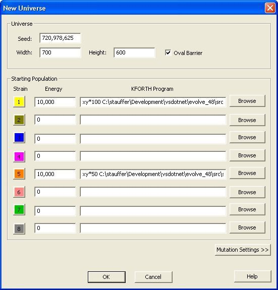
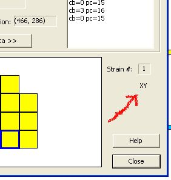

VOLVE 5.0
VOLVE 5.0
XY Simulations
The term XY Simulation refers to a specially created simulation in which all organisms must reproduce sexually. An XY organism cannot fertilize any spores created by itself. It can only fertilize spores that were created by other organisms, which is how sexual reproduction occurs in Evolve 4.0.
The name "xy" refers to the sex chromosomes in human biology.
How to create XY simulations
Preceed the KFORTH program with special characters, like this:
This causes the organisms in that strain to be marked with a special "sex-only" flag. You'll need to specify a population number (like 100 and 50 as in this example).
Boot strapping such a population will require a specially written KFORTH program that looks for spores and fertilizes them. Included in the distro are two files sex_seed.kf and xy_seed.kf which should get you started.
These types of simulations are difficult to sustain, but definately are cool things to experiment with as they offer a real "gene pool" to observe.
You can verify the organism is sex-only by examining it. The letters XY will appear in this dialog to indicate that the organism is a sex-only reproducer:

Your population will spiral out as shown here:

Conclusion
XY Simulations are quit different from the normal ones. When the organism is forced to reproduce sexually (rarther than asexually), suddenly its job becomes much harder. You'll notice that it is very hard to get a good simulation up and running. If it doesn't die off, the sim may get crazy creatures that grow to huge proportions.
Update: A new merge algorithm has been implemented. A random bit string is used to control the code block that is chosen from the first and second organism that donates a spore. This new algorithm has greatly improved the stability and usefulness of XY simulations. (you no longer get "crazy" creatures).